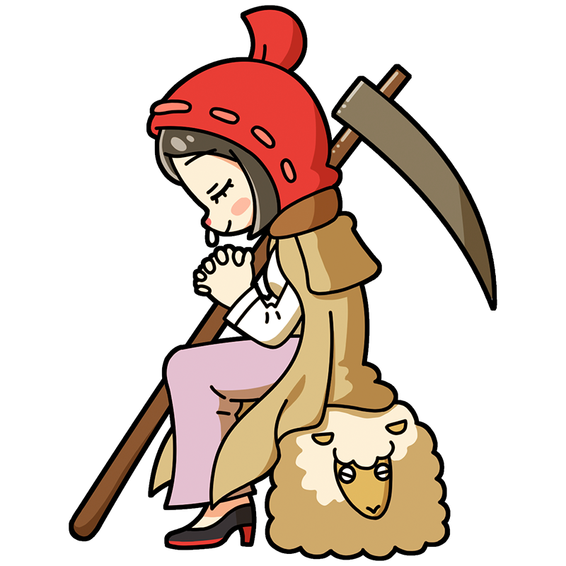

I've made up my mind.
I'm going to live a relaxed life in this village.
Millet
Get away from the city for a while,
the muse who sows the seeds of a laid-back life
A muse who has become synonymous with the Barbizon School in France. She runs a farm in the countryside, and while her working life is sometimes interpreted as a critique of the wealthy, she simply wants to live a slow-paced life away from the hustle and bustle of the city.
Style
Hometown
Kingdom of France
Classics
- "The Gleaners"
- "The Angelus"
- "The Sower" etc.
This is the Millet piece!
The Angelus
This painting depicts farmers pausing their work to offer prayers at the sound of bells ringing from a distant church. Though it does not directly depict crosses or Jesus, it is a work with strong religious overtones. While its subject is the beauty of working farmers, it is sometimes interpreted as a political work (proletarian art) depicting the class struggle of laborers, reflecting the social climate of the time.
Year
1857-1859
Medium
Oil on canvas
Dimension
55.5 cm x 66 cm
Collection
Musée d'Orsay
（France)
Who is Millet?
Jean-François Millet
A leading painter of the Barbizon school. He quietly depicted the labor of peasants and the faith within it, becoming a representative painter of French Realism. Originally painting mythological subjects, he famously began focusing on peasants after being mocked as “a painter who can only paint female nudes.” Though sometimes described as having an unassuming style, his depictions of peasants—simple yet powerfully rendered—honored their dignity, profoundly influencing many artists, including Van Gogh.
Full Name
Jean-François Millet
Born
October 4, 1814
Died
January 20, 1875(aged 60)